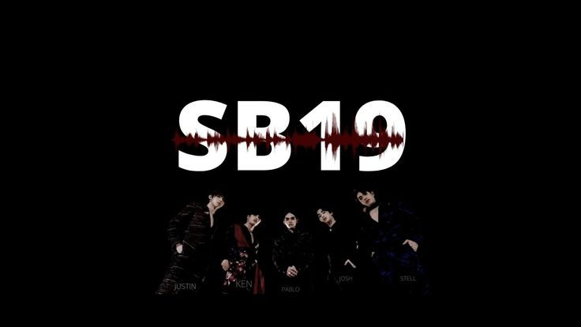
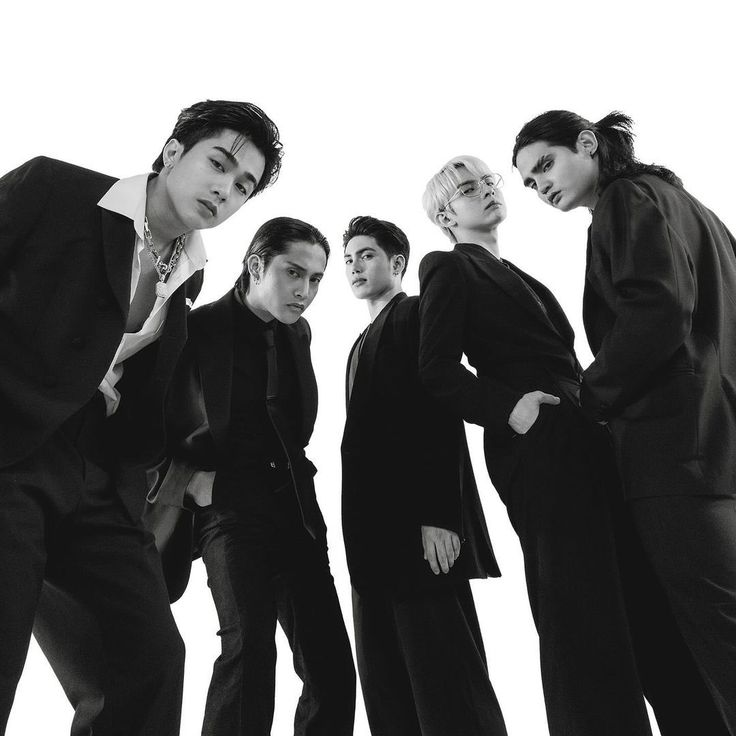
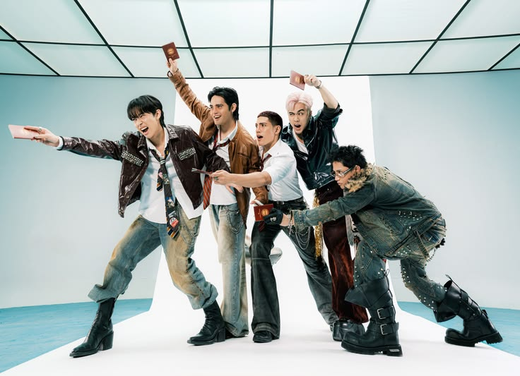
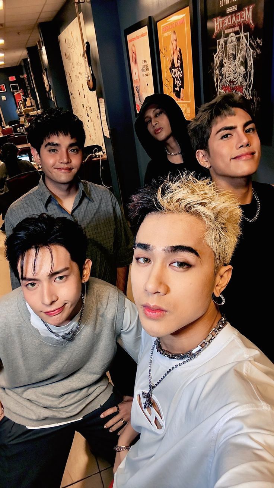
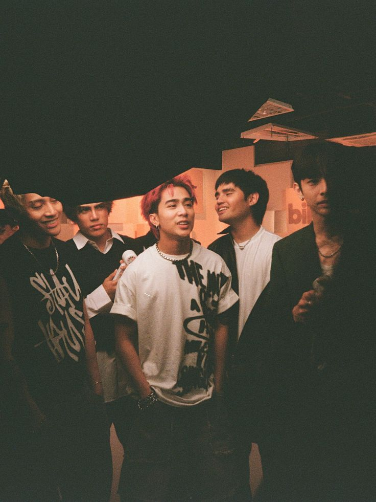
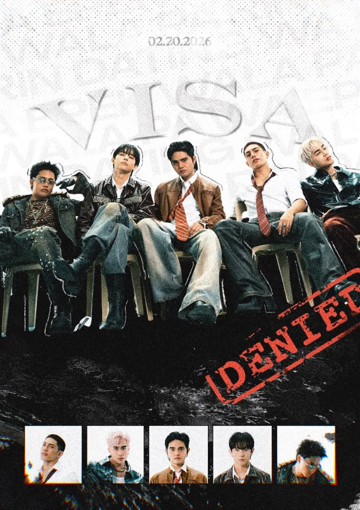

SB19 is a Filipino boy group formed by the company ShowBT Philippines. The group debuted in 2018 and has five members: Pablo (SB19 member), Josh Cullen, Stell Ajero, Ken Suson, and Justin De Dios. They are known for their powerful vocals, synchronized dancing, and meaningful songs that often talk about dreams, struggles, and Filipino pride. SB19 became internationally recognized after their song Go Up went viral online. Since then, they have helped popularize P-pop (Pinoy pop) and became one of the most successful Filipino music groups, gaining fans around the world called A’TIN.


Born on September 14, 1994, Pablo (formerly Sejun) is a Filipino singer, rapper, songwriter, dancer, and producer. He is a member of the boy group SB19 and the CEO of 1Z Entertainment, a company run by SB19 members. In 2025, he was named Artist of the Year at the 10th Wish Music Awards.

Born on March 21, 1997, Josh Cullen is a Filipino singer, dancer, and member of the boy group SB19. He is known for his powerful vocals and charismatic stage presence. Josh has contributed to the group's success with his talent and dedication, making him a beloved member of SB19.

Born on September 16, 1996, Stell Ajero is a Filipino singer, dancer, and member of the boy group SB19. He is known for his smooth vocals and impressive dance skills. Stell has been an integral part of SB19's success, contributing to the group's dynamic performances and musical achievements.

Born on November 15, 1996, Ken Suson is a Filipino singer, dancer, and member of the boy group SB19. He is known for his powerful vocals and energetic stage presence. Ken has been a key member of SB19, contributing to the group's success with his talent and dedication.
Born on July 20, 1997, Justin De Dios is a Filipino singer, dancer, and member of the boy group SB19. He is known for his versatile vocal range and dynamic dance moves. Justin has played a significant role in SB19's journey, bringing his unique style and passion to the group's performances.
SB19 was formed in 2018 and debuted in 2019. They became popular when “Go Up” went viral and released their first album in 2020, gaining more fans and recognition..
SB19 was formed in 2018 under ShowBT Philippines and trained using a K-pop style system. After some lineup changes, the final members became Pablo, Josh, Stell, Ken, and Justin. They debuted in 2018 with “Tilaluha,” but their big breakthrough came in 2019 when “Go Up” went viral online. This helped them gain a strong fanbase and appear on Billboard’s Social 50 chart. In 2020, they released their first album Get in the Zone. This increased their popularity even more. They also held their first online concert and became the first Southeast Asian act to reach the top 10 of Billboard’s year-end Social 50 chart.
SB19 became more famous in 2021 with “Pagsibol” and award nominations. In 2022, they went international with performances and their world tour.
In 2021, SB19 released their EP Pagsibol, featuring songs like “What?” and “Mapa.” They became the first Filipino group nominated at the Billboard Music Awards. Their song “Bazinga” also became very successful, reaching No. 1 on Billboard’s Hot Trending Songs chart. They also gained recognition through concerts, brand partnerships, and being named youth ambassadors. In 2022, they performed at international events like Expo 2020 Dubai and ASEAN-Korea Round Festival. They also helped lead major P-pop events in the Philippines and strengthened their presence in the music industry.
SB19 released “WYAT” and went on their first world tour, gaining global attention and new fans.
In 2022, SB19 released “WYAT (Where You At),” a disco-pop song about reconnecting with people. It showed a new style for the group. They launched their first world tour, performing in the Philippines, Singapore, UAE, and the United States. This helped them reach more international fans. Their tour trended online, and “WYAT” entered Billboard’s Hot Trending Songs chart. They also appeared on U.S. television and were recognized as one of the most influential Filipino music groups.
SB19 continues to release music, perform, and grow their fanbase globally. They remain a leading force in P-pop and Filipino music.
SB19 continues to release new music and perform internationally. They have a strong fanbase called A’TIN and are known for their meaningful songs and powerful performances. They have won many awards and are recognized as one of the most influential Filipino music groups. They continue to inspire fans with their talent, dedication, and positive messages.




SB19 released their 24-track album marking a new era in their career, featuring international collaborations.
SB19 became the first Filipino act to perform at Lollapalooza in Chicago, a major global music festival.
The group is set to perform at Summer Sonic 2026, expanding their presence in Asia.
They held “The Trilogy Finale” concert, showcasing their biggest and most powerful performance yet.
SB19 launched a “Wakas at Simula” pop-up store featuring official merchandise and fan experiences.
Featured in international media like Billboard Japan for their growing global influence.